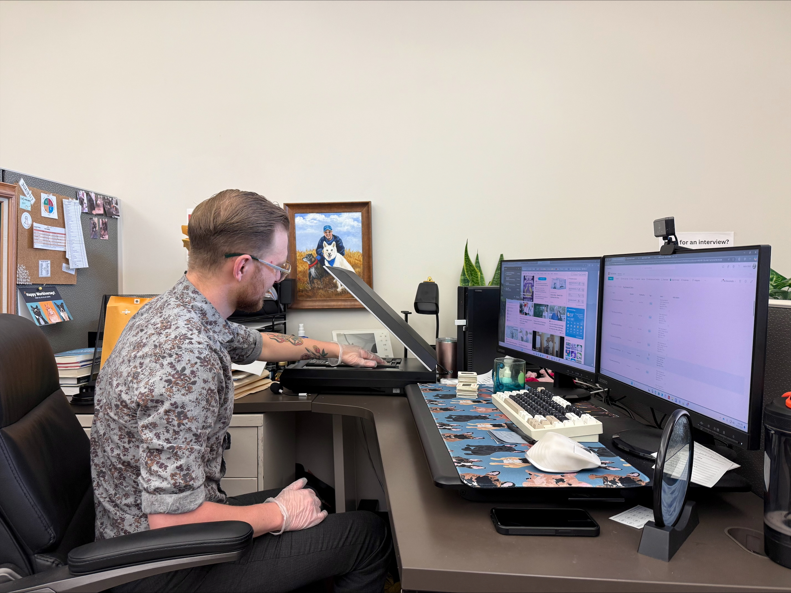
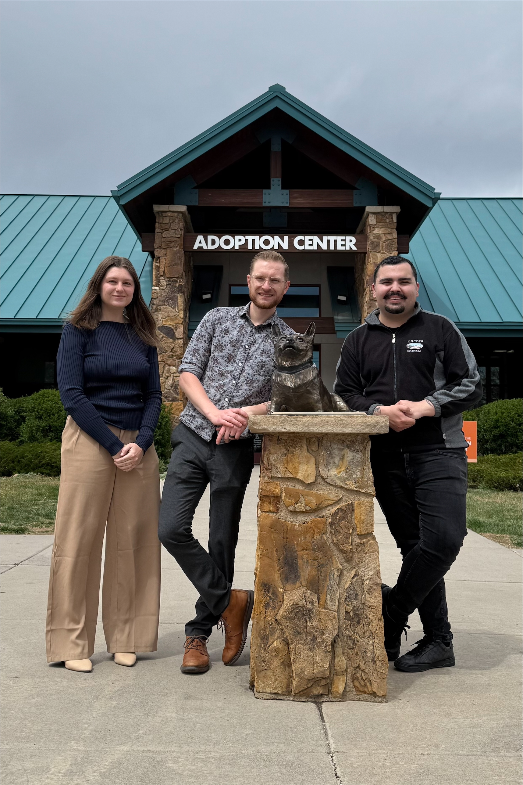

Why digitize our archives?
As many know, HSPPR has been serving our community for over 76 years. During that time, we have amassed a significant collection of physical archives, including documents, photographs, VHS tapes, slides, and more. As time passes, the risk of losing these materials increases. Natural disasters, such as wildfires and floods, or time itself could wipe out decades of our organization's history in an instant. This is why the archive team was created. We believe that preserving this history is essential to continually demonstrate our community impact, enhance employee morale, and learn from our past successes and mistakes to drive ongoing improvement within our organization.
Our archiving project brings together the strengths of its three team members: Jason Stolz, Beth Conner, and Nathan Garcia. Nathan Garcia provided SharePoint administration, web development, and video editing expertise. Jason Stolz led archive discovery, scanning, and authored The Book. Beth Conner developed the indexing system, tagging schematics, and provided creative direction.
The scanner used for this project is the high-resolution Epson Perfection V600 Photo Scanner, generously donated as an in-kind contribution. This professional-grade scanner enables us to achieve exceptional image clarity and precision, ensuring that every detail of our historical documents and photographs is preserved with the highest possible fidelity.
Its advanced features—such as Digital ICE technology for dust and scratch removal, and a high optical resolution of up to 6400 x 9600 dpi—make it an ideal tool for archival-quality digitization. Over the course of this project, Jason has become quite the expert in navigating and utilizing the Epson scanning software to its full potential. His growing proficiency has been instrumental in streamlining our workflow and maintaining consistent, high-quality outputs. Jason’s keen eye and technical skills ensure that each scanned item retains its original character while meeting the archival standards necessary for long-term preservation and digital access.
The webpages are hosted on GitHub and feature in-house developed HTML, CSS, and JavaScript, creating an interactive experience—especially for “The Timeline.” Graphics were provided by Lindsay Ross.
Our indexing system follows best practices for schematic design, optimizing search and filtering functionality to ensure navigating the archives is as seamless as possible.
We hope our viewers enjoy this project as much as we have enjoyed creating it. Please stay tuned for further developments.